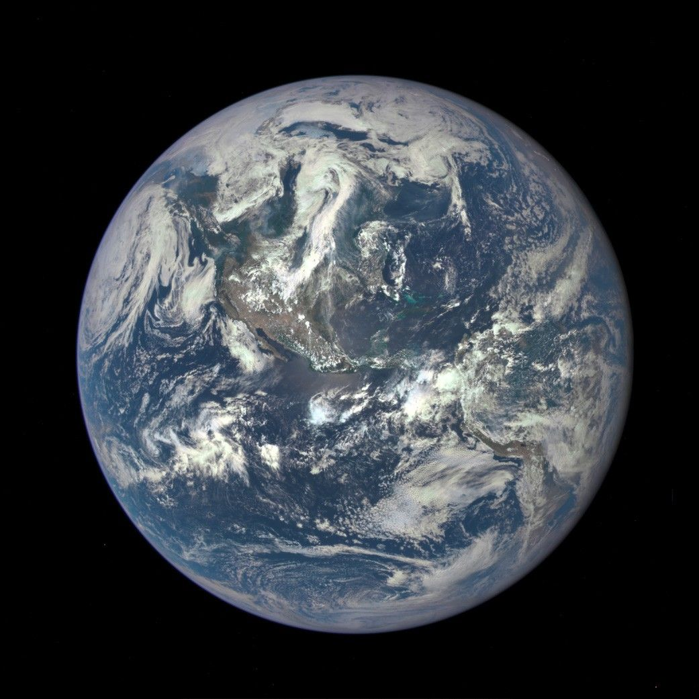
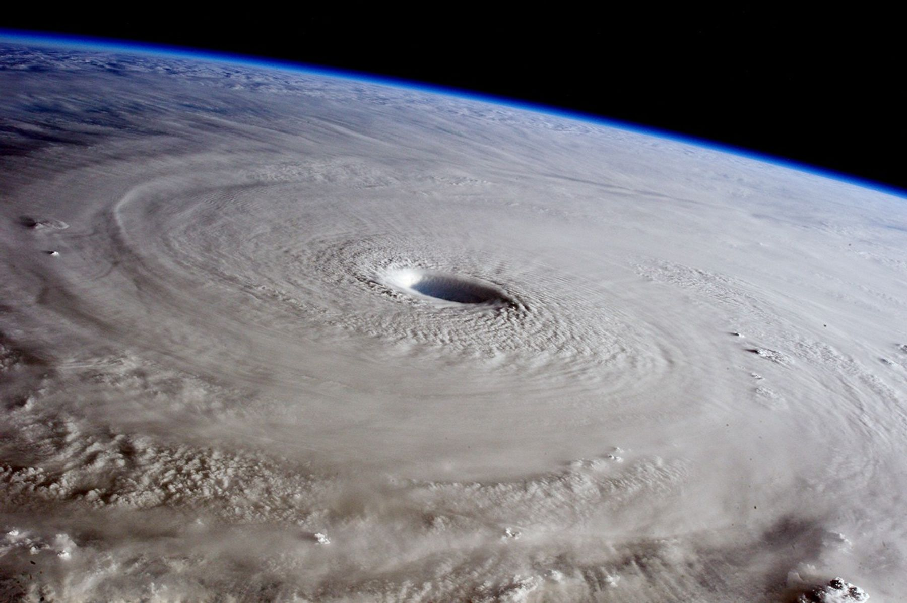
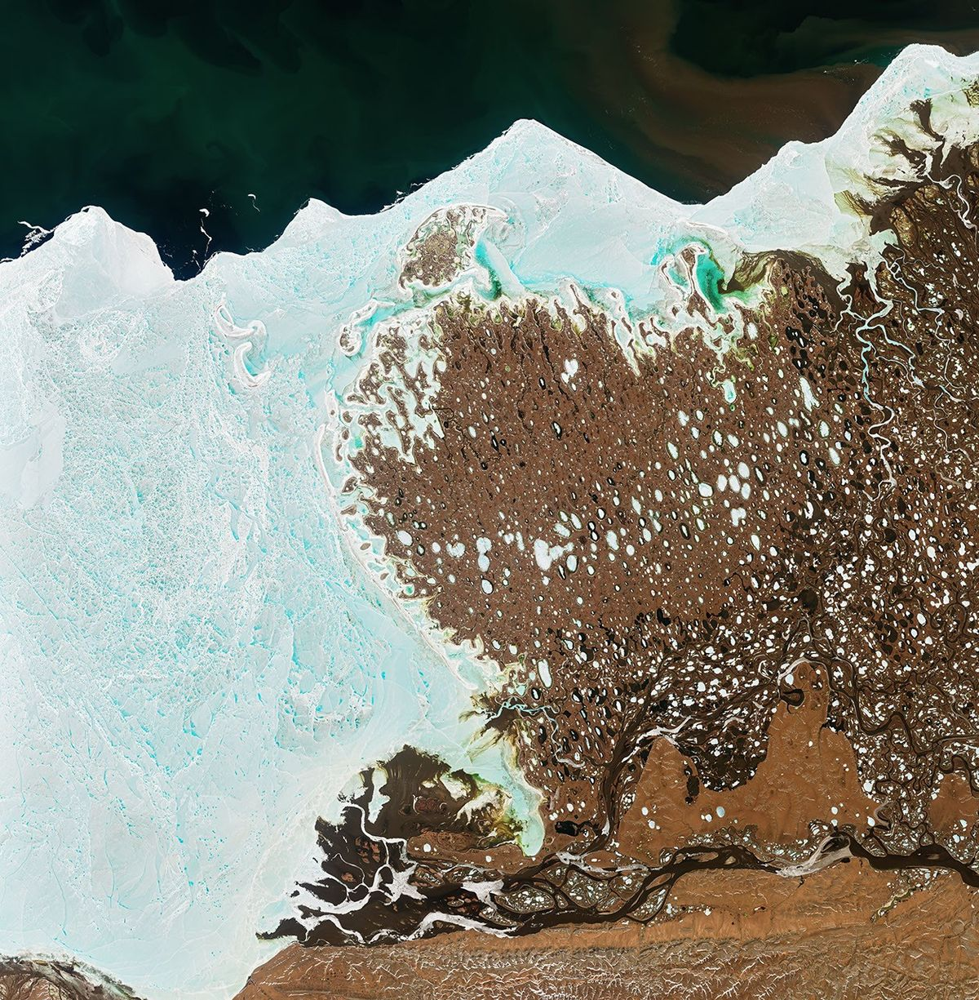
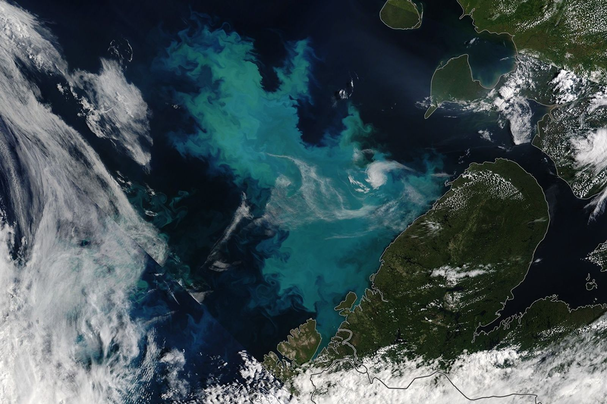
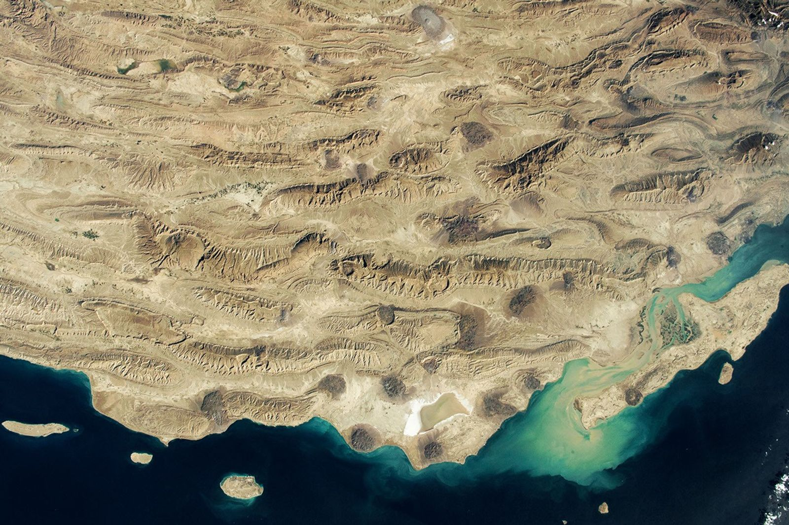

Universities & institutions
Participating institutions will be announced as collaborations are confirmed.
Join us ↗Earth science · Research agent evaluation
What research can an agent carry out independently?
We work with Earth scientists to design difficult tasks using real data and specialist software. We assess the research decisions an agent makes and whether its findings hold up.

Initiated by
Earth Last Exam asks an agent to take over a research problem with work still to do. It must decide which evidence to use, run the experiments it needs and revise its explanation when the results disagree.
Earth science is a demanding setting for this work. Observations often leave gaps, and several physical processes can explain the same pattern. A useful result must account for that ambiguity and still work when tested on another event or region.
Read our approach
Earth from orbit / ISS
Photographed from the International Space Station, Maysak’s eye sits within a broad cloud field. Earth’s curved horizon is visible beyond it.
Explore the environmentsESA/NASA / Samantha Cristoforetti
31 March 2015 · Observation source ↗
A task needs the software and working materials its field relies on. We prepare the data and documentation alongside an existing analysis, so the agent can inspect how it was done and try a different approach.
Our atmospheric workspace brings together archived forecasts, calibrated satellite observations and tracking diagnostics. WRF/WPS configurations provide the starting point for the model experiments in the full task.
An ocean task can pair a model grid and boundary conditions with temperature, salinity and current observations. Transport and conservation diagnostics help determine which processes explain a model’s errors.
Waveforms or deformation records come with station metadata and instrument responses. With forward models and an existing inversion, the agent can test which interpretations the observations actually constrain.

The typhoon task uses Himawari-9 infrared observations alongside GFS and GEFS forecasts. The figures show the tracking experiments completed so far, including cases where two methods locate different storm centers.
View the experimentsInvestigate how steering flow, vortex structure and convection contribute to forecast error. Use controlled experiments to test the explanation, then see whether it predicts another storm’s response. Improved forecasts must be supported by physical evidence.
We welcome questions from across Earth science, including work that spans several fields. These topics are a starting point; contributors help decide which problems to pursue.

River channels, permafrost lakes and coastal sea ice in one observation.
NASA Earth Observatory / Joshua Stevens · USGS
Image source

A break in the clouds reveals large-scale patterns in ocean color.
NASA Earth Observatory / Michala Garrison
Image source

Folded ridges and intervening valleys record the structure of the terrain.
NASA / ISS Crew Earth Observations · JSC
Image source
Scores reflect progress on the research question. We examine the results and the experiments supporting them, then check whether the method still works on data it has not seen.
See the evaluation protocolApply the method to new events or regions and compare it with the established baselines.
Connect the result to physical processes and quantify what remains uncertain.
Use matched controls and repeat experiments to establish why a method works.
EvolventAI is inviting researchers to help select tasks and review their scientific requirements. Research engineers can work with them to prepare the software environments and scoring code.
Universities & institutions · Advisors · Contributors
Participating institutions will be announced as collaborations are confirmed.
Join us ↗Help shape research questions and scientific standards.
Join us ↗Develop tasks, prepare environments and review experiments.
Join us ↗The roster will be published as participants confirm their involvement.
We invite domain experts to join the advisory team. Advisors help choose research questions and review what a convincing result would require. The role can be shaped around your expertise and availability.
Recommend a question from your work. A few sentences or a paper link are enough to start.
Propose a taskHelp researchers turn existing code and data into a runnable task with a reproducible reference experiment.
Join the collaboration